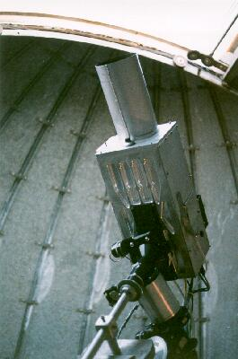
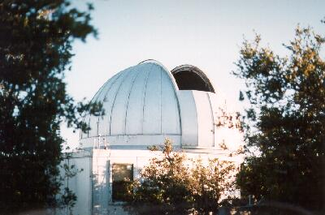

SJAA
Ephemeris
|
SJAA Ephemeris |
Through the Eyes of a Professional Observer Lick Vulcan Camera ProjectPeggy Bernard |
Now that I have finally been working as a professional observer, I though I'd share some thoughts about my experiences.
The program I am working on is a feasibility study as part of the Kepler Program run by NASA Ames Research Center. My assignment is to operate the Vulcan Camera telescope at Lick Observatory's Crocker Dome. The goal is to detect planets around stars outside our solar system. The ground based effort, if successful could lead to the construction of a Sun-orbiting spacecraft specifically designed to detect planets around distant stars.
Our current star field is in Cygnus so we are essentially looking at the Cygnus arm of our own galaxy. Other star fields with similar characteristics have been examined and there are additional star fields that we have yet to explore. Our galaxy has been estimated to be about 5000 light years thick in the region of our sun so there are plenty of stars to look at! The star fields are determined and selected by our NASA Principle Investigator William Borucki and his image team members.
Basically, the theory behind detecting planets around other stars goes like this: If we assume Jupiter-sized planets orbiting sun-like stars, then there should be a 1% drop in brightness of the star as the planet transits across the face of the star. In actuality, in our own solar system, a Jupiter/sun transit does produce a measured 1% change in brightness so that's where the 1% value is derived from.
If we can continuously measure this brightness on a star outside our solar system and observe a drop in brightness with a duration of about 2 hours, we might be able to detect the 1% change in brightness. Unfortunately, the noise that we might experience in our measurement system might equal 1% thereby masking out our desired brightness change. So we solve this problem by reducing the noise. However, we can't change the signal. It is always the ratio of the planet's area to that of the star it orbits.
We improve the signal to noise ratio by using "Folded Time." "Folded time" is not something from Star Trek, but rather simply overlaying a particular star's image brightness multiple times, image after image, night after night. "Folded Time" or "Folding" multiple image sets, taken at different times, of the same star, over top one another has the effect of reducing the noise by the square root of the number of "folds." The more "folds," the greater the noise is reduced. However, the signal level stays the same because we must always divide by the number of folds. Actually, after processing the signal in this fashion, we are able to see very pronounced "notches" of objects transiting target stars.
Other characteristics of the planet can also be determined with this method. We accurately record the times of observations as our image and data computers are time synchronized to both WWVB and GPS. Knowing the precise time events occur allows the image team to also determine the orbit time of the planet around the star. The planet's size ratio and orbital period are obtained from the transit information.
If a star is too big, as with some O and B spectral type stars and with the giant and supergiant stars, the transit signal would be too small to detect - the transit of a Jupiter sized planet would generate a change in brightness considerably less than 1% and therefore would be lost in the noise.
|  |
The telescope itself is a small 4" f/3 cooled CCD camera capable of detecting transits of stars as dim as 12th magnitude. There is a second cooled CCD telescope mounted on the camera for auto guiding in both right ascension and declination.
CCD's are "Charged Coupled Devices." Simply put, they are a huge array of solid state, semiconductor "capacitor" cells (pixels). Each "cell" is sensitive to light and generates a small electric current when photons of light strike the cell surface. This current charges each of the pixels in proportion to the brightness of the image on the pixels. Each cell in the array is then electronically scanned for its charge. These charge values are then read out of the CCD array for use by the imaging computer to build an accurate image. The resulting image can then be displayed on the computer screen and also stored as image digital data on a CD-ROM for later analysis on other computers.
The equipment controlling the telescope is quite sophisticated. Three computers are used for control, data collection, analysis, tracking, and CD-ROM generation. There is a fourth computer controller similar to Meade autostar hand held controller out in the dome used for reference and guide star locating capable of providing 8,388,608 steps, which results in 1.3 arcsecond resolution for operator pointing at the reference and guide stars.
After the telescope is setup and tracking the guide star, the bulk of the work involves controlling and monitoring everything using the computers.
Here is what my typical night of observing is like.
Arriving on site, I unlock the dome and power up the computer monitors. Then there is about an hour's work to do setup and calibration before imaging can begin.
The scope is uncovered and uncapped. It is then pointed at a white calibration screen inside the dome. The rest of the main image CCD, CCD coolant chiller equipment, and drive control electronics are then powered up following a power up sequence. A special translucent screen is installed in the front of the telescope in front of the shutter and lens. Dome and CCD chiller temperatures are recorded. The imaging CCD is kept at -26 degrees C whereas the tracking CCD is kept at -7 C. Another special filter inside the camera behind the shutter is then checked for condensation, and if any is present, I have to dry it out with a blower. The calibration light is turned on illuminating the calibration screen and the dome lights are turned out.
Then I'm ready to begin the CCD calibrations for the main CCD in the camera (no calibrations are run on the Guide Star CCD). The purpose of these calibrations is to quantify the flat, bias, and dark characteristics of the main CCD. After the first flat calibration runs, I reenter the dome to turn off the calibration lamp and remove the translucent flat calibration screen. The bias and dark calibrations are then run. All of the calibration data is recorded to disk files. Calibration sequences take about 45 minutes to complete. This is repeated again at the end of the observing session.
Here are some definitions:
bias - Bias is an offset that occurs when a pixel is read. Unfortunately, every pixel has a slightly different bias level. If it is not removed, it becomes a source of noise in the image. A bias frame is essentially a zero length exposure with the shutter closed. Measured bias values are then subtracted from the image. It is the first step in the image calibration, but is not done if a dark with the correct duration is available.
dark - CCD pixels produce a certain amount of dark current which accumulates in the pixel during exposure regardless of whether the pixel is illuminated. Dark current is produced by heat and that's one good reason to cool the CCD array. Dark current accumulates at different rates in each pixel during exposure. If not compensated for, this will add large amount of noise to the image. Dark current is measured with the shutter closed and is taken for the same time period of the image exposure frames. Once dark current of the CCD is measured, this data subtracted from the image resulting in huge image quality improvement. To reduce the effects of random noise, multiple dark frames are usually taken.
flat - CCD pixel sensitivity to light. This step follows the dark calibration step. Each pixel has a slightly different sensitivity to light and this adds a noise component know as flat field error to the image signal. Basically, the limiting magnitude of a CCD system is determined by the sky background and the flat field error. To obtain a flat field calibration, a bright light is turned on to illuminated a white card in front of the CCD telescope with the shutter open. Between the camera lens and the light source is a 1/4 inch piece of white plastic sheet, which is used as a flat field screen. The flat calibration is used to improve images by dividing the flat frame data into the image frame data. This removes pixel-to-pixel sensitivity variations from the image.
So flat calibration records the level of each CCD pixel with a uniformly "flat" brightness field applied across the surface of the CCD. Since each pixel is not uniform in the amount of current it produces for a given brightness, we simply measure and record the flat level of each pixel prior to imaging.
Bias calibration records the quiescent current operating point of each pixel. This is again not uniform for each pixel so we need to again measure and record the bias level of each pixel prior to imaging.
Since flat, bias and dark calibrations are taken at the beginning and end of each observing session the delta drift of the calibrations between the beginning and end of the observing session can be calculated and applied.
|  |
Once calibrations are complete, I reenter the dome, open the slit and rotate the dome to the target area of the sky. When it's dark, I make sure the dome lights are off and locate the reference star using a Telrad and a magnified finder. The tricky part is next. After telling the autostar hand held controller that I have found the reference star, I then need to move the telescope to the guide star coordinates. This sounds simple, but trying to hold the autostar hand held controller, read its dim display while moving a very heavy telescope, in the dark, isn't real easy. When I finally get it to about the right place, then I jog the telescope into precise position coordinates with the control joystick paddles.
Then I run back to the control room to see if I've got the guide star close enough for the autoguider to grab. If it's OK, then I close the control room door and begin the autoguide sequence. The auto guiding is done with a second CCD and MAXIM DL software. Essentially, the feedback loop for tracking the guide star is sample the guide star image in pixels, calculate how far the guide star is off the desired X and Y "centroid" target location in "error" pixels, move the telescope the corresponding amount of error pixels to eliminate the error, then resample the guide star image. This loop continues either until the guide star fades, the background gets too light (as in dawn at sunrise), or the operator purposely interrupts the process. When tracking properly, guiding is accurate to a few tenths of a pixel.
Once the telescope is auto guiding, then I begin the data set runs. Each of these is a 7-1/2 minute CCD exposure controlled by the imaging computer and "V for Windows" software. There is a 30-second computer image processing and storage overhead time, so the entire image cycle is really 8 minutes. Using "V" image display commands, I check the star images of the first data set on my data computer screen. If I see the correct star field, I program the data computer for multiple runs. At the end of each image run set, which can be from 8 to 160 minutes (I do a lot of 96 minute sets myself) depending on conditions, I reenter the dome and check the dome slit position as the dome is under manual control. I also record main imaging CCD and dome temperatures.
This process is repeated all night long until dawn. Between image sets, the shutter on the camera is closed via software control so the dome lights can be turned on during dome entry. However, my preference is to maintain my night vision, and to operate the control room monitors in "night vision" mode, then enter the dome using my red flashlight. That way I can easily see the star field, telescope, dome slit positions and can readily tell if everything is lined up. Not having turned on the dome lights, there is no risk of making an exposure set with the dome lights left on by mistake. The telescope is not touched during this entire process.
Things get real busy at the end of data sets. In addition to my dome duty, I need to make CD data disks. I begin this task after the next data set has been started. There is a sense of urgency to get the data disks completed because the imaging computer has been known to crash if it gets overloaded with data. Each image file is 32 megabytes, which may not seem like a lot but when you have 18 to 22 of these, that's a lot.
The CD ROM recordings are audited by displaying a few image sets to the screen by using a program called MIRA. MIRA allows us to view the CD image, flat, bias, and dark data. The image sets are all the same (and they should be!) and are loaded with thousands of stars. Flats appear simply as a white field. Bias and darks just look plain weird!
So what do we do with all this data? Well, the object is to detect Jupiter sized planets around stars. When the planet moves in front of the star, the brightness of the star dims. Our equipment and technique is looking for about a 1 to 2 percent change in brightness. Candidate targets are further examined by making spectroscopic measurements with large telescopes at several observatories including the Keck telescope in Hawaii.
Major differences between doing this work and a typical amateur astronomy night seem to be the restriction of a dome, looking at the same area of the sky all night, and looking at images on a computer screen and not through the eyepiece. Also, the environment can be extremely cold and VERY windy. All sorts of bugs seem to be attracted to the control room lights so sometimes I squash a few critters. Fortunately, being properly dressed and having a cozy control room with a heater helps with the wind and cold. Cookies, hot tea, and a radio playing good rock and roll make it rather pleasant. Of course there is the requirement of staying up and alert from dusk to dawn and lots of caffeine helps with that.
So there you have the Vulcan Program in a nutshell. So far we have found several interesting candidate stars in the Cygnus field. As we continue our search, I'm confident that we will find other excellent candidates. After all, there are "billions and billions of stars out there" so if even half of those stars were candidates, there should be millions and millions of planets.
| Peggy Bernard; last updated: February 05, 2002 | Prev Next |